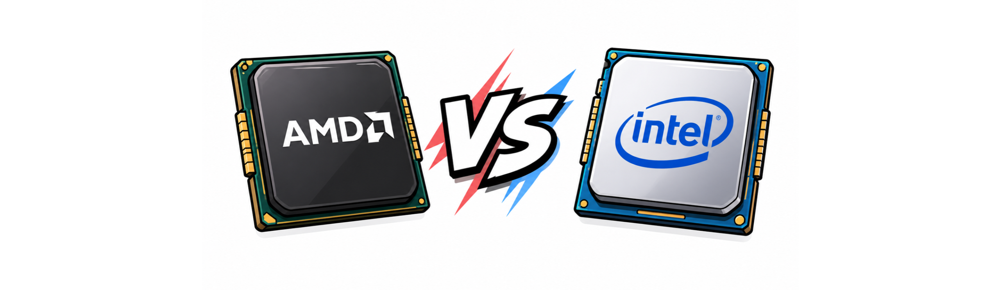

AMD vs Intel for Gaming in 2026: Which CPU Should You Buy?
Ryzen X3D or Core Ultra? We compare AMD and Intel CPUs for gaming, power use, productivity, and platform longevity so you can pick the right processor in 2026.
Choosing between AMD and Intel used to be a coin flip. In 2026 it's much clearer — but only once you know what you actually do with your PC. If you mostly game, one company has a big lead. If you also render, compile code, or edit video, the answer changes. Here's how AMD's Ryzen 9000 series and Intel's Core Ultra 200S chips really compare for gaming, power use, productivity, and long-term upgrades.
The 2026 Lineup in Plain English
AMD: Ryzen 9000 and the X3D Chips
AMD's current desktop chips are the Ryzen 9000 series, built on the Zen 5 architecture and the AM5 socket. The ones gamers care about most are the X3D models, which stack a large slab of extra cache (called 3D V-Cache) on the processor. Games love cache, which is why chips like the Ryzen 7 9800X3D, the newer Ryzen 7 9850X3D, and the Ryzen 9 9950X3D sit at the top of nearly every gaming chart.
The standard Ryzen 9000 chips, like the Ryzen 5 9600X and Ryzen 9 9950X, don't have the extra cache but are still strong all-rounders.
Quick tip: The 9850X3D is only a few percent faster than the 9800X3D on average, so the older chip is often the better buy if it's cheaper.
Intel: Core Ultra 200S and the Plus Refresh
Intel's current desktop chips are the Core Ultra 200S series (codenamed Arrow Lake) on the LGA1851 socket, plus a refreshed "Plus" lineup launched in 2026, such as the Core Ultra 7 270K Plus and Core Ultra 5 250K Plus. Arrow Lake was a ground-up redesign that dropped Hyper-Threading and focused on efficiency and multi-core power.
The Plus refresh improved gaming and productivity, and it works on existing Intel 800-series motherboards, so you don't need a brand-new board if you already own one.
Quick stat: Intel's flagship Core Ultra 9 285K has 24 cores, while AMD's gaming flagship, the 9800X3D, has just 8 — but cores aren't what games care about most.
Where Each Brand Wins
Gaming: AMD Wins Clearly
In CPU-limited testing, such as 1080p with a fast graphics card, AMD's X3D chips lead Intel's best gaming processors by roughly 20% or more. The 9800X3D and its siblings top Tom's Hardware's gaming hierarchy, with Intel's refreshed chips closing the gap but still trailing.
At higher resolutions like 1440p and 4K, your GPU does more of the work, so the difference shrinks. If you play at 4K with a mid-range card, you may not notice any gap at all.
Recommendation: For a gaming-first PC, an AMD X3D chip is the best CPU you can buy.
Power Use and Heat: AMD Wins Again
Gaming power draw is one of AMD's biggest advantages. In testing, the 9800X3D used about 93W in Cyberpunk 2077 — roughly a third less than Intel's 285K. Less power means less heat, quieter cooling, and a lower electricity bill.
This also makes cooling easier. If you're choosing a cooler, read our AIO vs air cooling guide — a good air cooler is usually enough for X3D chips.
Quick tip: Lower power draw is a big deal in small cases and in hot climates.
Productivity and Multitasking: Intel Wins
If you render video, compile code, run virtual machines, or do heavy multitasking, Intel's many-core chips pull ahead. The Core Ultra 9 285K is far ahead of the 9800X3D in heavily threaded tests, and the Core Ultra 7 270K Plus offers strong multi-core performance for considerably less money than AMD's X3D chips.
Extra cache helps games; extra cores help rendering, compiling, and encoding. It's that simple.
Recommendation: If you do serious creative or development work alongside gaming, Intel's Core Ultra chips or AMD's Ryzen 9 models are worth a look.
Platform and Upgrade Path: AMD Wins
AMD has committed to supporting the AM5 socket for years to come, which means you can start with a budget chip today and drop in a faster one later without changing your motherboard. Intel has confirmed its 2026 Plus chips work on current 800-series boards but hasn't promised a comparable long-term roadmap.
Both platforms use DDR5 memory only, so remember what's happening to RAM prices in 2026 when budgeting.
Quick tip: A long-lived socket is worth real money if you like to upgrade every few years.
So Which CPU Should You Buy?
Best for High-End Gaming
The Ryzen 7 9800X3D remains the safest overall gaming pick, with the 9850X3D as a slightly faster option if the price gap is small. It delivers top gaming performance, low power draw, and a long-lived socket.
Best for Mid-Range Builds
The Ryzen 5 9600X is a strong, efficient all-rounder, while Intel's Core Ultra 5 250K Plus is a good alternative if you want better productivity performance at a similar price. AMD's older Ryzen 5 7600X remains a solid budget AM5 option.
Recommendation: On a tighter budget, spend more on your graphics card than your CPU — it matters more for frame rates at most resolutions.
Best for Gaming Plus Content Creation
If you stream, edit, or compile on the same machine you game on, consider the Ryzen 9 9950X3D, which blends top gaming speed with workstation power, or an Intel Core Ultra 7 or 9 if multi-core value matters most.
Frequently Asked Questions
Is AMD better than Intel for gaming in 2026?
Yes. AMD's X3D processors lead Intel's best gaming chips in CPU-limited tests and use less power doing it.
Is the Ryzen 7 9800X3D still worth buying?
Yes. The newer 9850X3D is only a few percent faster on average, so the 9800X3D is often the better value.
Is Intel still good in 2026?
Yes. Intel's Core Ultra chips are excellent for productivity and multi-core work, and the Plus refresh improved gaming performance too.
Does the CPU matter at 4K?
Much less. At 4K your graphics card does most of the work, so even a mid-range CPU will perform close to a flagship.
Bottom line: For gaming, AMD's X3D chips are the best you can buy and the Ryzen 7 9800X3D is the sweet spot. For multi-core-heavy work, Intel's Core Ultra chips offer excellent value. Match your CPU to what you actually do, don't overspend on a processor your graphics card can't keep up with, and remember that the best gaming upgrade is usually the GPU.
Pairing your new CPU with a graphics card? See which GPUs are worth buying.
👉 Read: Best GPU for Gaming 2026 — RTX 5000 vs RX 9000 Ranked